Helping communities:
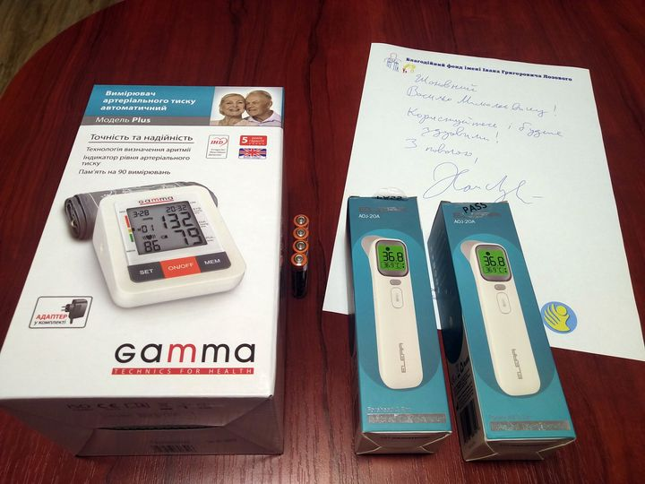
November 18, 2020 - Department of Social
Services for Home Care Boromlya prefecture.
Gifts from the Lozowy Fund: Tonometer and two
digital thermometers.
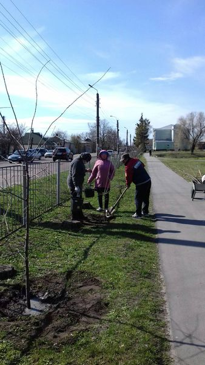
April 12, 2020 - Gift from the Lozowy Fund: 200
saplings of plum trees, planted across the city
of Okhtyrka.
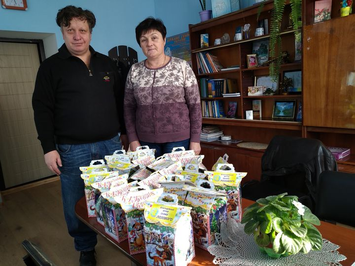
December 26, 2019 - Starostat (prefecture) of
Buhruvate. Gifts from the Lozowy Fund: Sweets
for New Year’s.
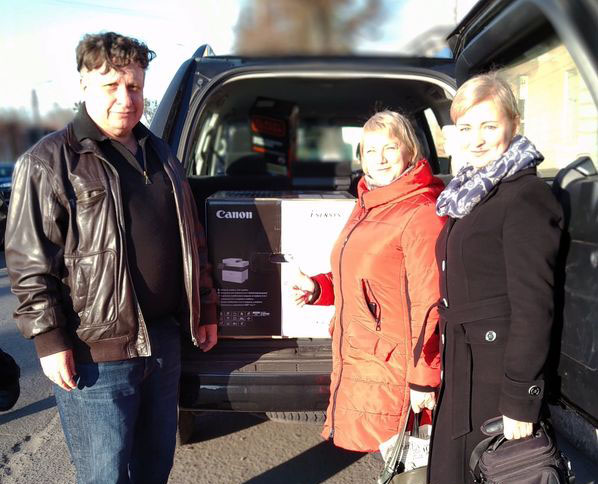
December 2, 2019 - Department of Social
Protection of Boromlya. Gift from the Lozowy
Fund: Large network printer.
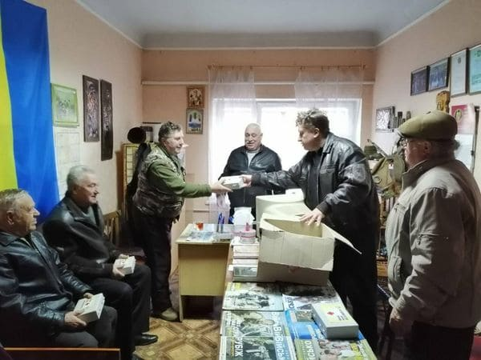
November 26, 2019 - Lebedyn Veterans Union.
Gifts from the Lozowy Fund: First aid kits.
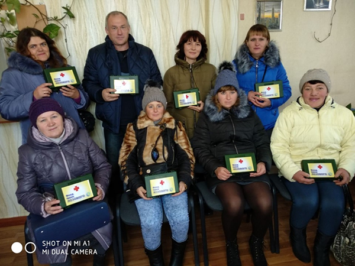
October 31, 2019 - Territorial Department for
Assisting Single, Disabled Citizens of Velyka
Pysarivka. Gift from the Lozowy Fund: First aid
kits.
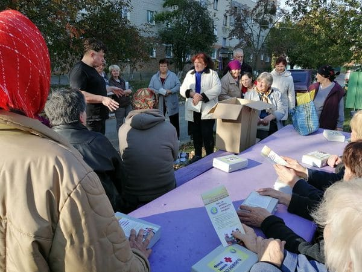
October 15, 2019 - Meeting with pensioners in
the Lebedyn area. Gifts from the Lozowy Fund:
First aid kits.
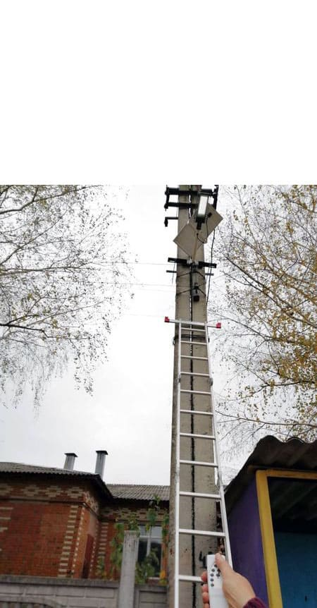
October 9, 2019 - Village Council of
Patriotivka. Gift from the Lozowy Fund:
Autonomous street lighting in the center of the
village.
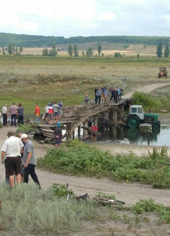
September 23, 2019 - Bridge over the river
Vorsklytsia of Tarasivka. Gift from the Lozowy
Fund: Metal brackets for restoring the bridge.
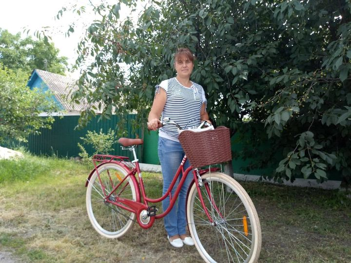
June 19, 2019 - Post office of Chupakhivka. Gift
from the Lozowy Fund: Bicycle.
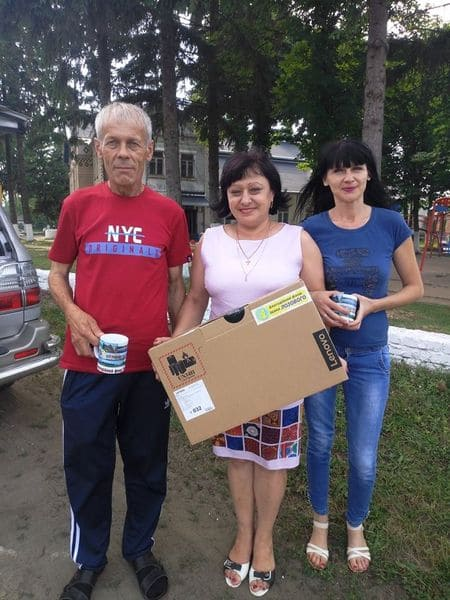
June 14, 2019 - Village Council of Chernechyna.
Gift from the Lozowy Fund: Computer laptop.
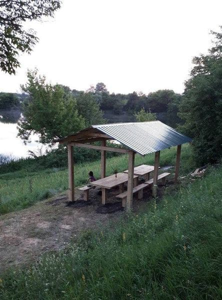
June 13, 2019 - Village Council of Soniachne.
Gift from the Lozowy Fund: Gazebo.
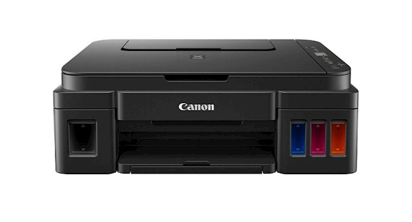
June 6, 2019 - Starostat (prefecture) of
Kuzemyn. Gift from the Lozowy Fund: Computer
laptop, printer.
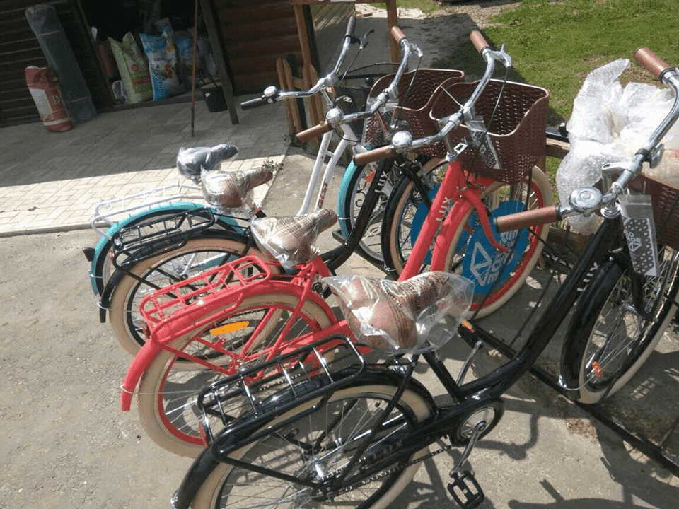
June 6, 2019 - Post office of Kuzemyn. Gifts
from the Lozowy Fund: 3 bicycles.
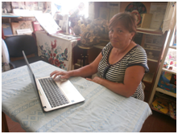
June 3, 2019 - Village Council of Mashchanka.
Gift from the Lozowy Fund: Computer laptop.
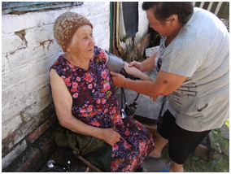
June 6, 2019 - Social workers of Mashchanka.
Gift from the Lozowy Fund: Tonometers (4 units).
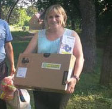
June 6, 2019 - Village Council of Ivanivka.
Gifts from the Lozowy Fund: Two laptops,
tonometer.
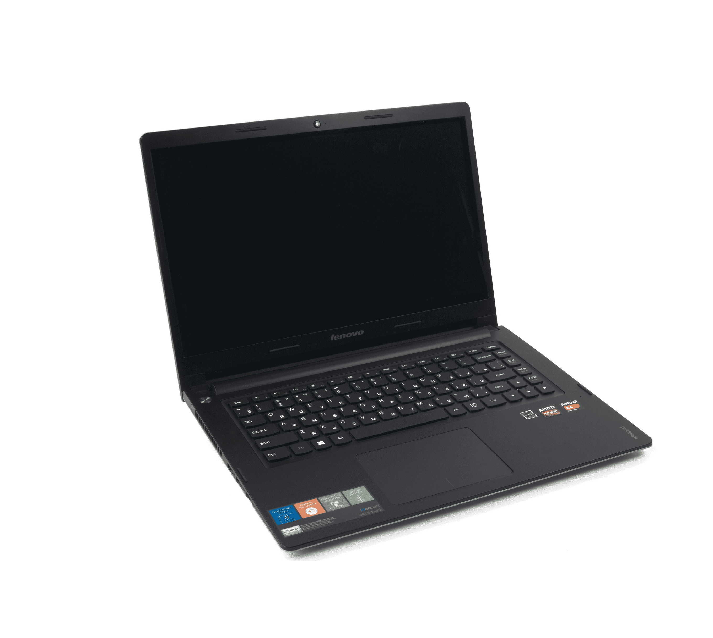
May 21, 2019 - Village Council of Chupakhivka.
Gift from the Lozowy Fund: Computer laptop.
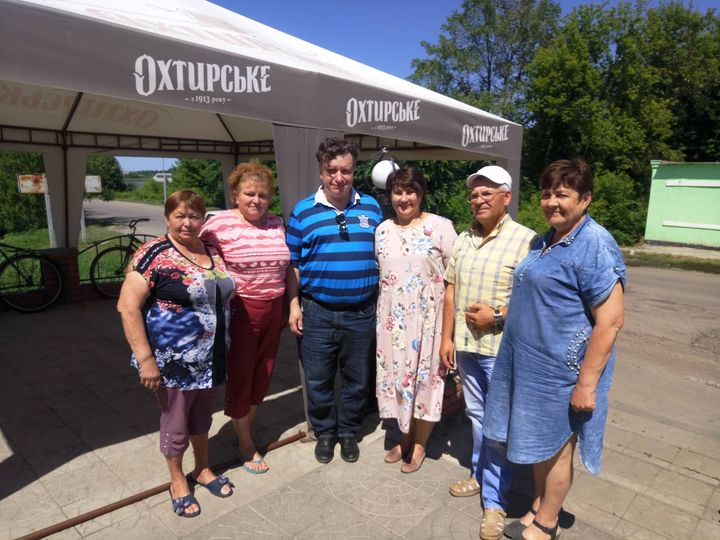
May 21, 2019 - Municipal Enterprise of
Chupakhivka. Gift from the Lozowy Fund: Chainsaw
“Calm” for cutting heating wood.
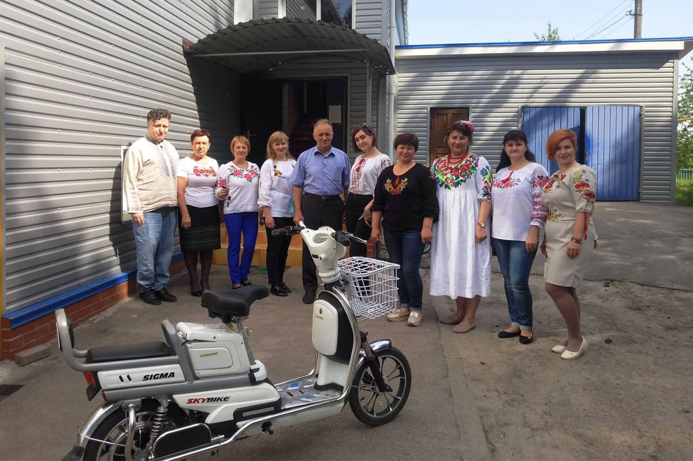
May 16, 2019 - Department of Social Care
Services of Boromlya. Gift from the Lozowy Fund:
Electric motorbike.
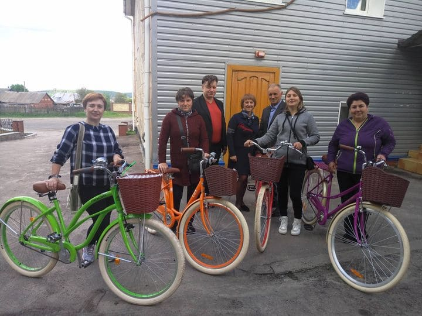
May 11, 2019 - Social care workers of Boromlya.
Gifts from the Lozowy Fund: 4 bicycles.
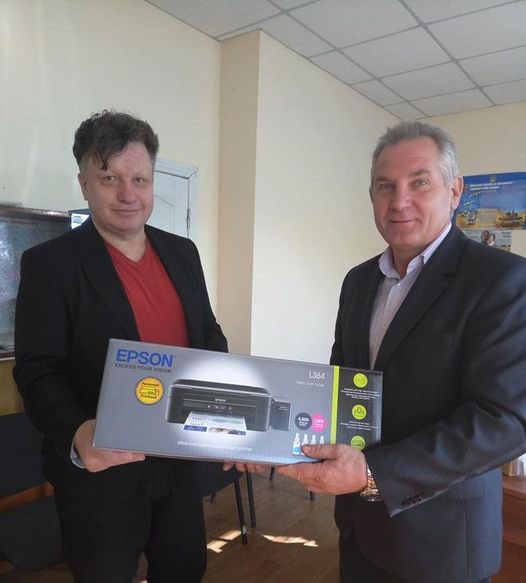
May 11, 2019 - Village council of Hrebenykivka.
Gift from the Lozowy Fund: Color inkjet printer.
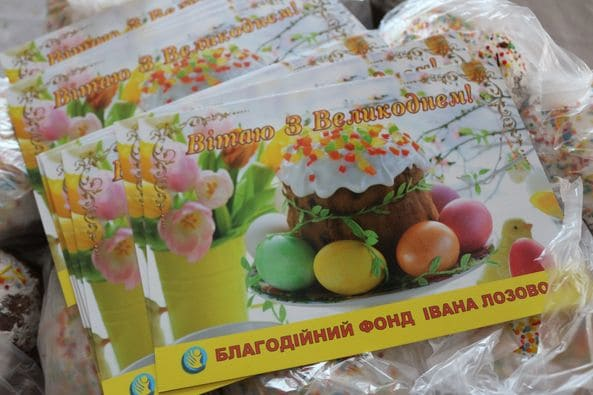
April 25, 2019 - Easter gifts organized with the
Lebedyn “Probation Center”, the Voznesenska
Religious Community and the Lebedyn City Center
for Social Services. Gifts from the Lozowy Fund:
Easter cakes for 3 thousand pensioners.
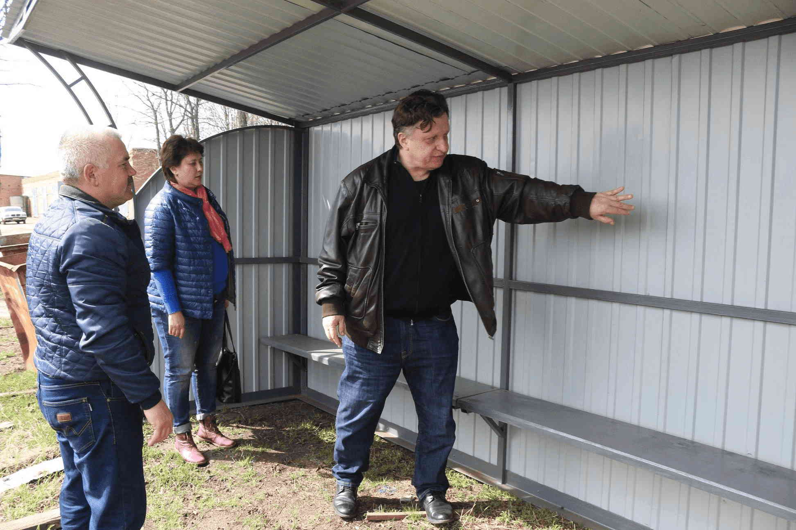
April 18, 2019 - Municipal enterprise “Parks and
Recreation Comples” of Lebedyn. Gift from the
Lozowy Fund: A new bus stop.
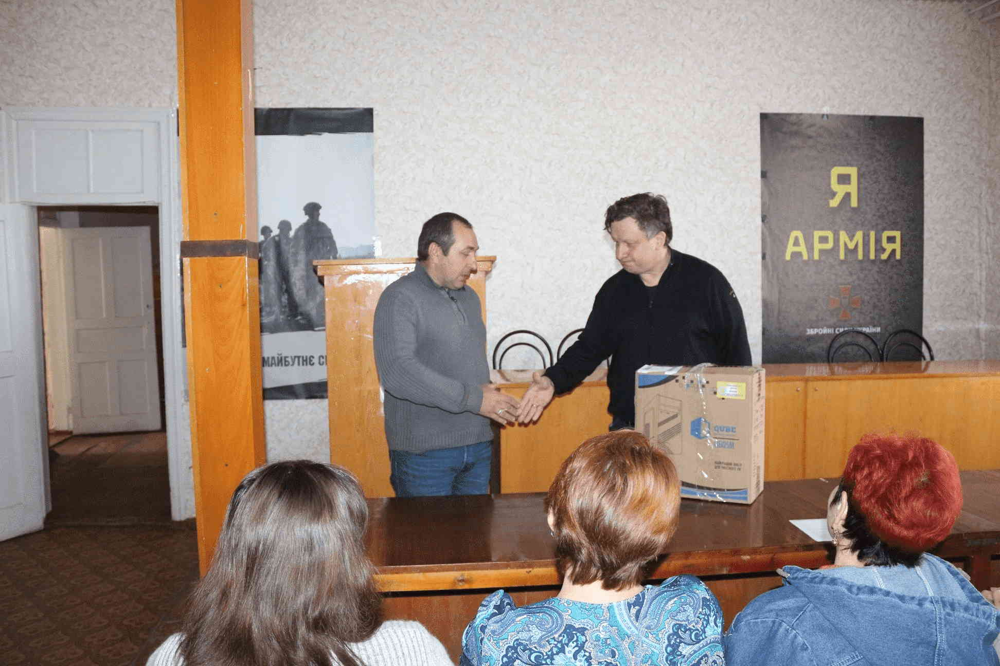
April 18, 2019 - Territorial Center of Social
services of Lebedyn. Gift from the Lozowy Fund:
Sound system control unit.
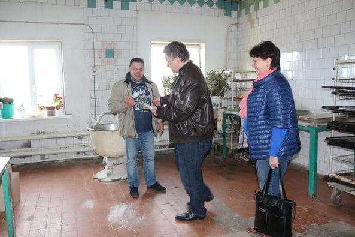
April 18, 2019 - Gifts for Easter for socially
vulnerable of Lebedyn. Gifts from the Lozowy
Fund: Easter cakes.
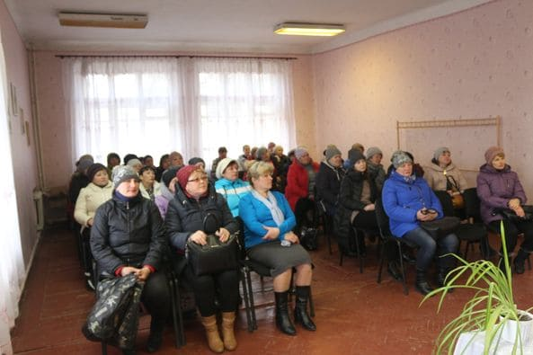
March 15, 2019 - Territorial Center for Social
Services for Pensioners and Disabled Citizens of
Lebedyn. Gifts from the Lozowy Fund: Tonometer
and Easter cakes.
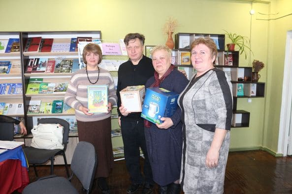
March 15, 2019 - Sports Club for the Disabled
“Phoenix” of Lebedyn. Gifts from the Lozowy
Fund: Electric kettle and tea set.